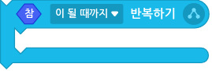
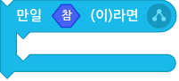
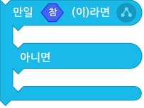

흐름 블록
1. (2) 초 기다리기
입력한 시간( )만큼 기다린 후에 다음 블록이 동작합니다.
)만큼 기다린 후에 다음 블록이 동작합니다.
시간이 0 이하이면 동작을 건너뛰는 대신에 아주 짧은 시간을 기다려요.
2. (10) 번 반복하기
입력한 횟수( )만큼 감싸인 블록이 반복 동작합니다.
)만큼 감싸인 블록이 반복 동작합니다.
횟수가 0 이면 감싸인 블록은 동작하지 않아요.
3. 계속 반복하기
감싸인 블록이 계속해서 반복 동작합니다.
‘반복 중단하기’ 블록()으로 멈출 수 있어요.
4. <참> [이 될 때까지] 반복하기

판단 블록( )에 따라 감싸인 블록이 반복 동작할지 결정합니다.
)에 따라 감싸인 블록이 반복 동작할지 결정합니다.
목록 상자()를 클릭하면 반복을 멈추는 시점을 바꿀 수 있어요.
- 선택할 수 있는 시점
이 될 때까지: 판단 블록( )이 참이 될 때까지(거짓인 동안) 반복합니다.
)이 참이 될 때까지(거짓인 동안) 반복합니다.인 동안: 판단 블록()이 참인 동안(거짓이 될 때까지) 반복합니다.
5. 반복 중단하기
이 블록을 감싼 가장 가까운 반복 블록을 즉시 멈춥니다.
이 블록이 조립되어 있는 블록 중 가장 가까이에 있는 반복 블록이 멈추게 됩니다.
6. 만일 <참> 이라면
만일 판단 블록( )이 참이라면, 감싸인 블록이 동작합니다. 거짓이라면, 감싸인 블록이 동작하지 않고 다음 블록이 동작합니다.
)이 참이라면, 감싸인 블록이 동작합니다. 거짓이라면, 감싸인 블록이 동작하지 않고 다음 블록이 동작합니다.
7. 만일 <참> (이)라면 아니면

만일 판단 블록( )이 참이라면, 위의 감싸인 블록이 동작합니다. 거짓이라면, 아래의 감싸인 블록이 동작합니다.
)이 참이라면, 위의 감싸인 블록이 동작합니다. 거짓이라면, 아래의 감싸인 블록이 동작합니다.
‘만일 <참> 이라면’ 블록을 두 개 조립하는 것보다 판단 블록( )이 덜 필요하겠죠!
)이 덜 필요하겠죠!
8. <참> 이(가) 될 때까지 기다리기

판단 블록( )이 참이 될 때까지 기다렸다가, 참이 되면 다음 블록이 동작합니다.
)이 참이 될 때까지 기다렸다가, 참이 되면 다음 블록이 동작합니다.
9. [모든] 코드 멈추기
선택한 블록이 즉시 멈춥니다.
목록 상자()를 클릭하면 멈출 블록을 선택할 수 있어요.
- 선택할 수 있는 블록
모든: 작품의 모든 블록이 동작을 멈춥니다.자신의: 이 오브젝트의 모든 블록이 동작을 멈춥니다.이 블록의: 이 블록과 조립한 블록이 동작을 멈춥니다.자신의 다른: 이 오브젝트에서 이 블록과 조립한 블록을 제외한 모든 블록이 동작을 멈춥니다.다른 오브젝트의: 다른 오브젝트의 모든 블록이 동작을 멈춥니다.
하지만 모든 코드를 멈추어도 작품을 중지하는 것은 아닙니다. 시작 블록은 여전히 작동하거든요.
10. 처음부터 다시 실행하기
작품을 처음부터 다시 실행합니다.
시작하기 버튼을 클릭했을 때와 똑같이 작품을 실행해요.
11. 복제본이 처음 생성되었을 때
오브젝트의 복제본이 새로 생성되었을 때, 해당 복제본에서만 이 블록에 조립된 블록이 동작합니다.
다른 복제본과 원본 오브젝트는 이 시작 블록이 동작하지 않아요.
12. [자신] 의 복제본 만들기
오브젝트의 복제본을 생성합니다.
목록 상자()를 클릭하면 자신(이 오브젝트) 또는 다른 오브젝트를 선택할 수 있어요.
13. 이 복제본 삭제하기
이 블록이 동작하는 해당 복제본을 삭제합니다.
14. 모든 복제본 삭제하기
이 블록이 동작하는 오브젝트와 상관 없이, 작품에서 생성한 모든 복제본을 삭제합니다.
복제본들이 가장 무서워하는 블록이에요.